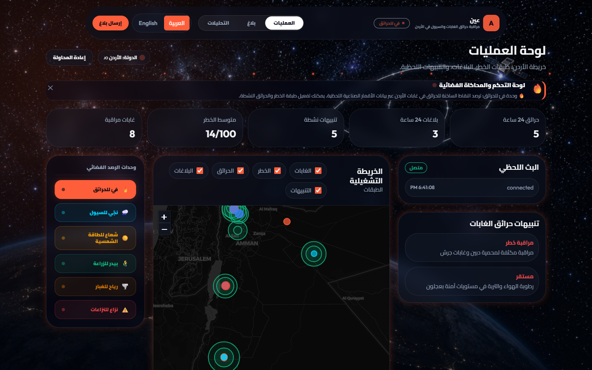

تطبيق حي لمنظومة FWI الكندية (Van Wagner 1987) يعيد حساب الخطر كل ساعة لكل غابة مراقبة.
معاملات تصحيح لـ 40 نوع غابة — من أرز الأطلس الجبلي إلى مانغروف رأس محمد الرطب.
صور Sentinel-2 بطيف SWIR تكشف امتداد الحريق الفعلي تحت الدخان.
Gemini يصنّف سبب الحريق المرجّح — طبيعي، بشري، أو متعمد — من سياق البيانات.

لوحة عمليات فيّ: بؤر حرارية حية، درجات خطر لحظية، وإنذارات متحقق منها على خريطة تكتيكية واحدة.